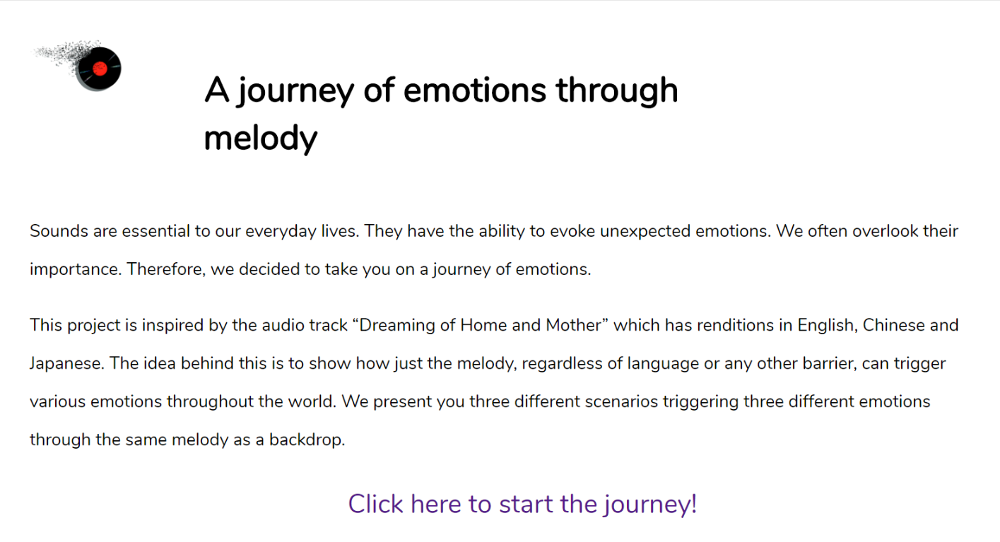
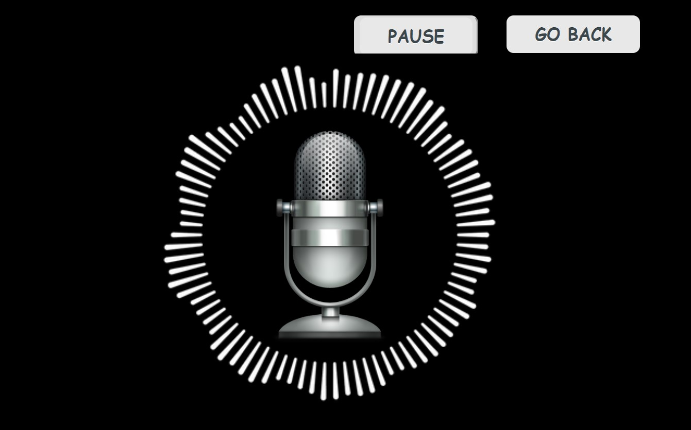
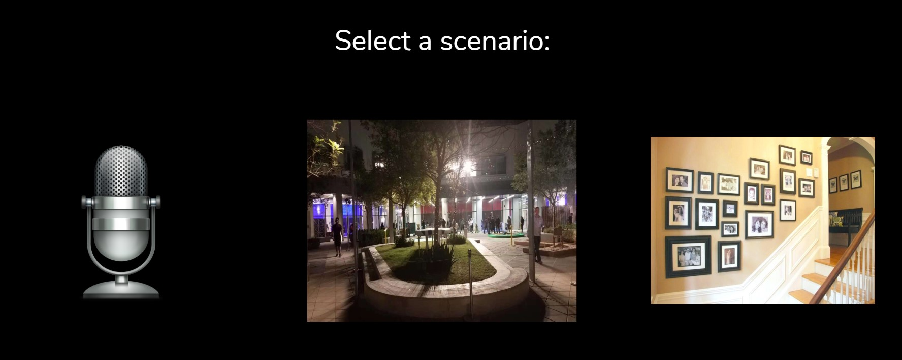

The audio project aims to take the listener on a journey full of emotions using the notion of storytelling. Three different scenarios having different settings are presented to the viewer but the bottomline of all the scenarios is the same: to invoke a specific emotion within the listener. The first scene takes the listener on a journey through childhood, triggering the emotion of nostalgia. The second setting illustrates the feeling of farewells and goodbyes; while the third scenario depicts the emotion of homesickness. Together, they form a timeline of life, from one stage to the other, using the same melody as a backdrop to the scenes. The idea was inspired by the song "Dreaming of Home and Mother" in which the same melody is used in three different versions of the song: English, Japanese and Chinese. The aim was to convey that emotions are universal and music/audio plays a significant part in invoking these emotions within ourselves.
I had the initial idea about showcasing diversity in some sense through audio. Lichen then found the song "Dreaming of Home and Mother" because it was famous back in China. Our idea was at first to use the three versions (English, Japanese and Chinese) of the song and present three scenarios based upon those songs. However, we then realized that we wanted to integrate more of our own recorded audio and hence we then decided to only work with what these three songs had in common - the melody. The next part was writing the scripts of the scenes. Instead of having a continuous 2-3 minute sound piece with one story, we decided to form three different storylines, each responsible for conveying a specific emotion. For experimenting, I first wrote the introduction and the script for the Radio scene. After doing the recordings for the first scene based upon the script, we were both pretty content because whatever we had in mind was being conveyed through the audio. I then edited the audio and finalized the first scene using Audacity's features such as Equilizer and Amplifier. Once this was done, we proceeded to record audios for the second and the third scenes, which were written by Lichen but some final modifications were proposed by me (such as narration for the third scene etc.). All the recordings we needed were done by ourselves, including narrations and other small audio clips. While Lichen edited the clips, I made the webpage layout for the first scene, and generated a short waveform for the first scene's audio, while simultaneously developing buttons for controlling the audio using JavaScript.
The same button and positioning implementation was then used to make webpages for the second scene (by me) and the third scene (by Lichen). Once we had the final framework, I proposed to separate the three scenarios while Lichen insisted on merging them together. At the end, we decided to keep them separate because there wasn't a very strong interconnection between them and, as the Professor pointed out, the melody was not being played for the enterity of the clip and hence the element of disconnection was also apparent within the three clips. In this way, each scenario depicts a different storyline to invoke different emotions, as was initially aimed by us.
'A journey of emotions through melody' is my first ever take on working with audio recording equipment as well as using an audio editing software and integrating the resulting audio clip into a webpage. I got exposed to a variety of JavaScipt attributes for interacting with audios as well as cool Audacity features such as Equilizer and echo. The overall concept that we were trying to achieve was implemented effectively, with each scenario conveying emotions through a story. Although there could have been some minor improvements such as making the webpages look more appealing or adding some sort of visualization to the webpages of scenes 2 and 3 (similar to what was done for scene 1), however in the interest of time this is the best we could have achieved. Therefore, the goals we had set for this audio project were successfully met and hence, I personally am content with the work we put in as well as with the resulting outcome.